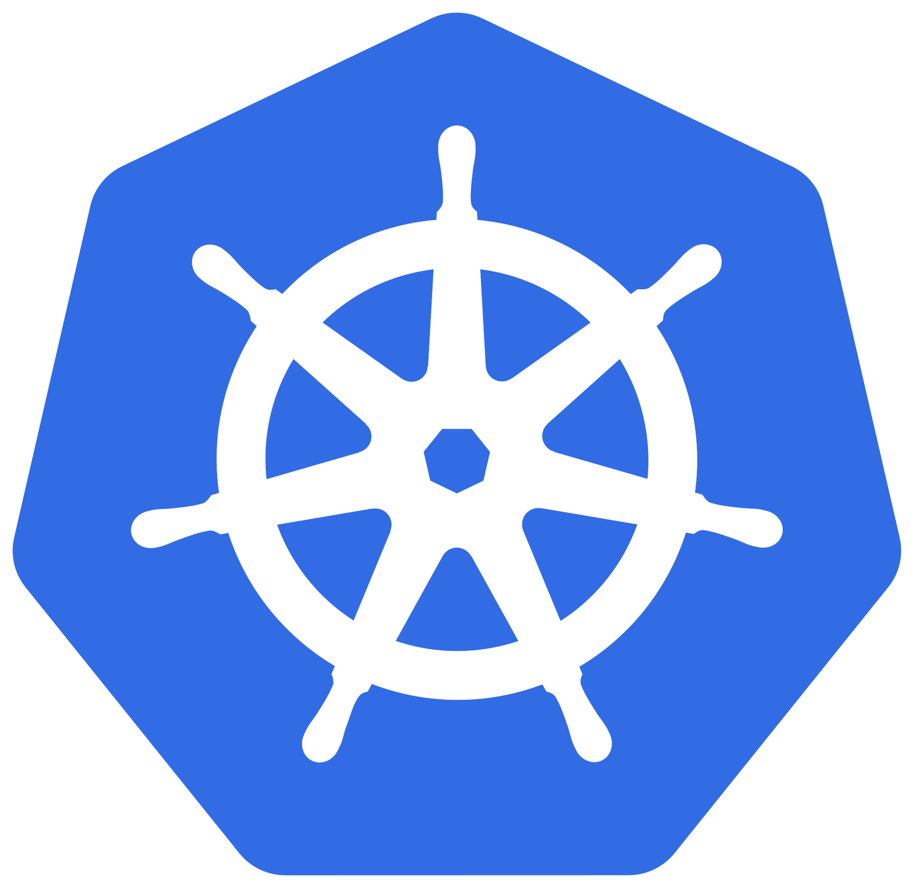

Intro to Kubernetes Workshop
- Go to bit.ly/mongo-kubernetes to open these slides
- Once open, press → to go to the next slide and confirm you have all the dependencies installed for this workshop
[1 of 4] Confirm Docker Desktop is installed
-
Run the following command in your terminal:
docker ps -
You should see something like the following:

- If so, click →. If not, click ↓ to troubleshoot.
Install Docker Desktop
- Go to docs.docker.com/get-docker/ and follow the instructions to install Docker Desktop
- Once done, click →
[2 of 4] Enable Kubernetes on Docker Desktop
-
Open the Docker Desktop Dashboard, go to Settings, and enable Kubernetes if it isn't already. Click Apply & restart after enabling. Press ↓ for more detailed instructions

Enable Kubernetes on Docker Desktop
- Go to docs.docker.com/desktop/kubernetes/ and follow the instructions to enable Kubernetes on Docker Desktop
- Once done, click →
[3 of 4] Confirm kubectl is installed
-
Run the following command in your terminal:
kubectl get nodes -
You should see something like the following:

- If so, click →. If not, click ↓ to troubleshoot.
Install kubectl
- Go to kubernetes.io/docs/tasks/tools/#kubectl and follow the instructions to install kubectl
- Once done, click →
[4 of 4] Install the Coopernetes container we'll be using for examples
-
Run the following command in your terminal:
docker pull andrewingraham509/coopernetes:latest -
You should see something like the following:

- If you run into an error, let me know! Otherwise, click →
You're ready for the workshop!
We'll start shortly. While you wait, feel free to press ↓ repeatedly to learn some Kubernetes trivia.
Kubernetes is a Greek word meaning helmsman which is the person who steers a ship, the same way Kubernetes steers the containers it controls. Kubernetes was also chosen because it was a rarely Googled term.
Kubernetes is based on Google's internal container orchestration project called Borg
The team originally wanted to call it Seven of Nine as a reference to the Star Trek Borg drone, but trademarking wouldn't allow it
The wheel of a ship is called a helm and is where the Kubernetes logo comes from. Despite helms typically having 6 or 8 spokes, you'll notice the Kubernetes logo has 7. This is a reference to the "Seven of Nine" drone.
Want more Kubernetes lore? Here's a documentary on Kubernetes:
Overview
- Intro to Kubernetes
- Kubernetes Architecture and Fundamentals
- Demo Project
1. Intro to Kubernetes
But before we get started with Kubernetes, let's cover some quick background information...
Containers
- A way to package code and all its dependencies so an application runs reliably from one environment to another
- Similar to Virtual Machines (VMs), containers provide benefits like resource isolation and allocation
- Unlike VMs, containers virtualize the operating system instead of the hardware
- This allows containers to be more portable and efficient
- Press ↓ for additional resources on Containers
Additional resources
Docker
- Docker is a software platform that allows you to build, test, and deploy applications quickly
- Docker packages software into containers
- Docker Hub is the world's largest library and community for container images
- Press ↓ for additional resources on Docker
Additional resources
Microservices
- Microservices are an architectural and organizational approach to software development where software is composed of small independent services
- The trend from monolithic architectures towards microservices caused an increased use of container technologies
- This resulted in applications that could be made up of lots and lots of containers
- Press ↓ for additional resources on microservices
Additional resources
TODO - customize this
Intro to Kubernetes
- Open source container orchestration tool
- Developed by Google
- Helps manage containerized applications in different deployment environments
Kubernetes Benefits
- High availability:
- Scalability:
- Disaster Recovery:
Kubernetes Costs
- Increased Complexity
- Press ↓ for additional resources
Additional resources
Motivation
When to use When not to use Additional Resources - Theo's not to use kubernetes video
Architecture
When to use When not to use Additional Resources - ByteByteGo's short architecture video
Project - Coopernetes
TODO - image of Cooper behind the Kubernetes logo w/ a sailor's hat